|
5-4-1
|
Paraguay | 0 | - | 1 | France |
4-2-3-1
|
| HT 0-0 | ||||||
|
FIFA World CupSaturday 4 July 2026
|
||||||
- Venue
- Philadelphia Stadium
- Attendance
- 68,324
- Referee
- Ilgiz Tantashev
Substitution58'
O. Alderete
J. Canale
Substitution61'
J. Enciso
G. Caballero
- 2
Substitution71'
D. Gómez
Mauricio
M. Almirón
G. Ávalos
Whistle45+4'
45+4'
Yellow card19'
B. Barcola
Substitution61'
B. Barcola
D. Doué
Penalty scored70'
K. Mbappé
Yellow card81'
M. Koné
Substitution84'
O. Dembélé
R. Cherki
Yellow card90+7'
M. Olise
Paraguay | |
|---|---|
Goalkeeper | |
| 12 | O. Gill |
Defender | |
| 2 | G. Velázquez |
| 3 | O. Alderete 58' |
| 4 | J. Cáceres |
| 6 | J. Alonso |
| 15 | G. Gómez |
Midfielder | |
| 8 | D. Gómez 71' |
| 10 | M. Almirón 71' |
| 14 | A. Cubas |
| 23 | M. Galarza |
Forward | |
| 19 | J. Enciso 61' |
Substitutes | |
| 11 | Mauricio 71' |
| 13 | J. Canale 58' |
| 21 | G. Ávalos 71' |
| 24 | G. Caballero 61' |
France | |
Goalkeeper | |
| 16 | M. Maignan |
Defender | |
| 3 | L. Digne |
| 4 | D. Upamecano |
| 5 | J. Koundé |
| 17 | W. Saliba |
Midfielder | |
| 6 | M. Koné 81' |
| 7 | O. Dembélé 84' |
| 11 | M. Olise 90+7' |
| 12 | B. Barcola 19'61' |
| 14 | A. Rabiot |
Forward | |
| 10 | K. Mbappé 70' |
Substitutes | |
| 20 | D. Doué 61' |
| 24 | R. Cherki 84' |

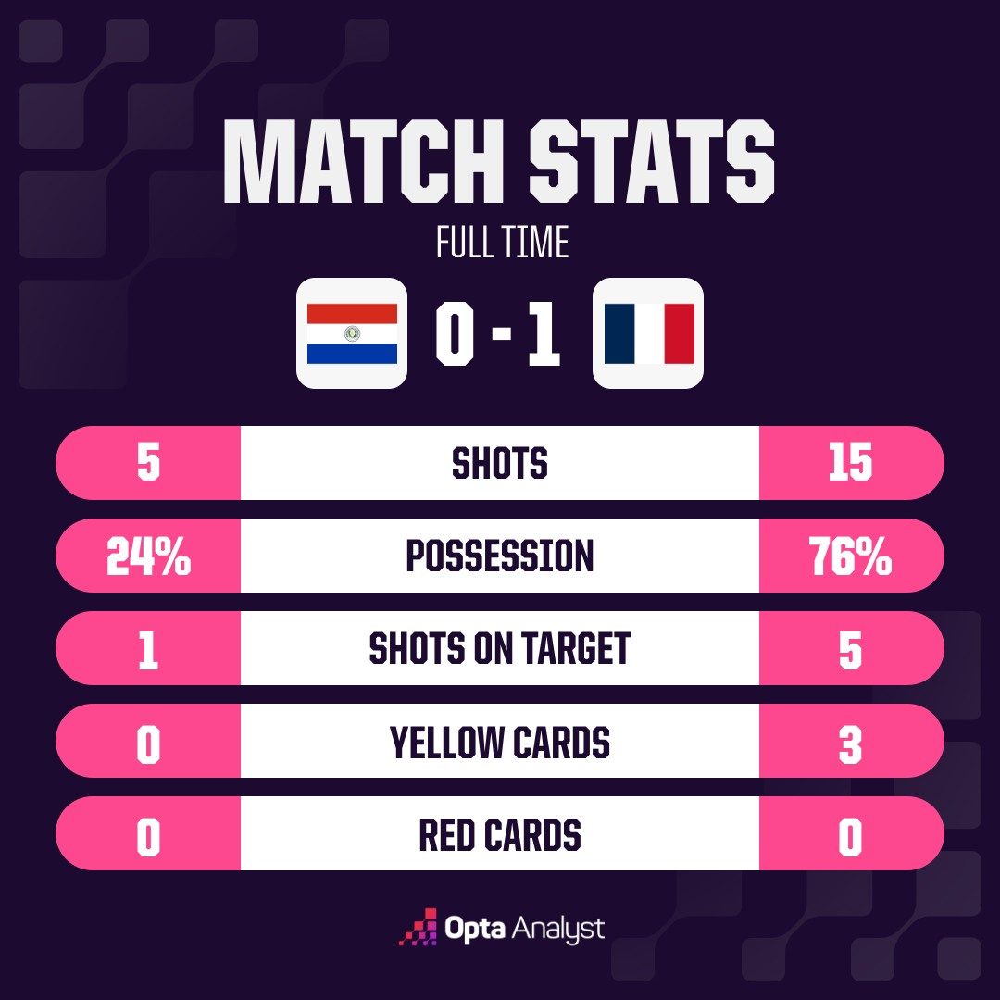
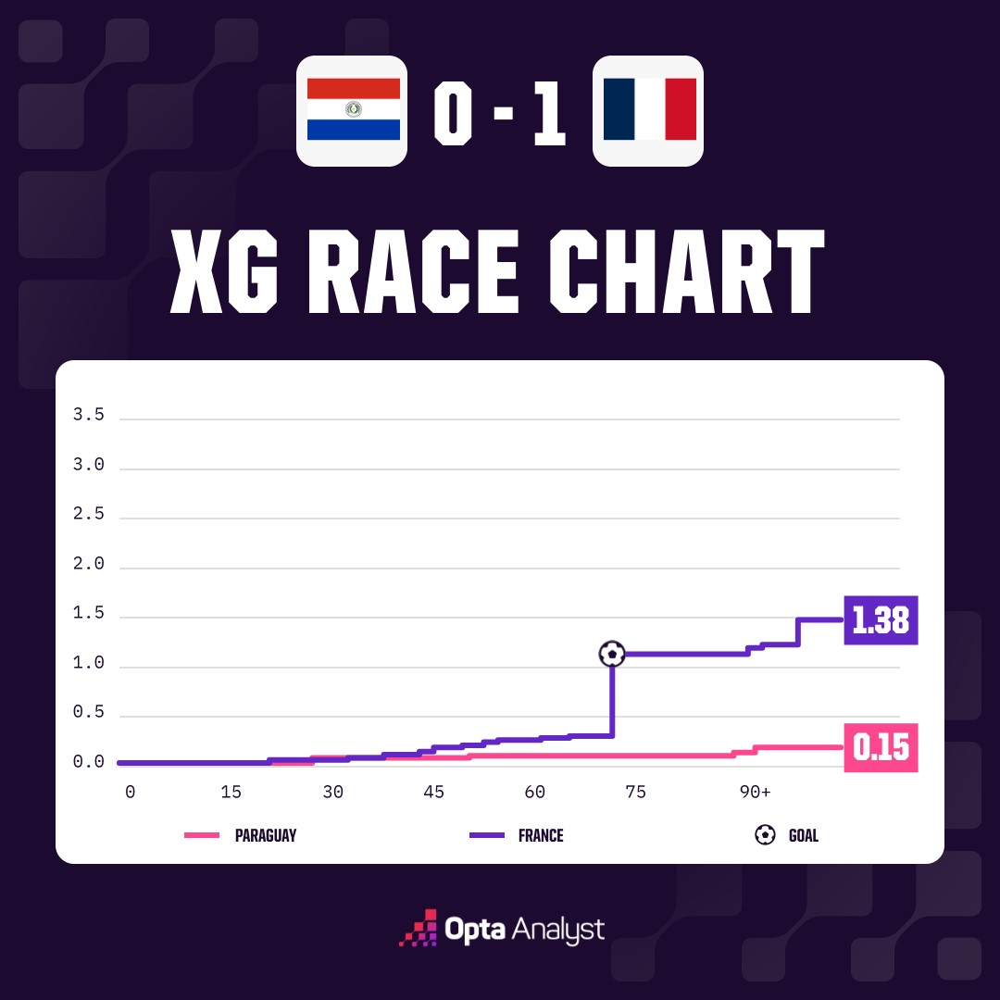
102'
Paraguay failed to attempt a shot on target in this game, it's the first time they failed to attempt a shot on target in a game in the FIFA World Cup (since at least 1965/1966).
102'
France have won their last 5 games in the FIFA World Cup, their last longer winning streak was from 30th June 2018 to 26th November 2022, a run of 6 games.
102'
Paraguay have failed to win in their last 3 games in the FIFA World Cup, their last longer winless streak was from 24th June 2010 to 13th June 2026, a run of 4 games.
102'
Paraguay attempted 5 shots in this game, their lowest total in a single match in the 2026 FIFA World Cup.
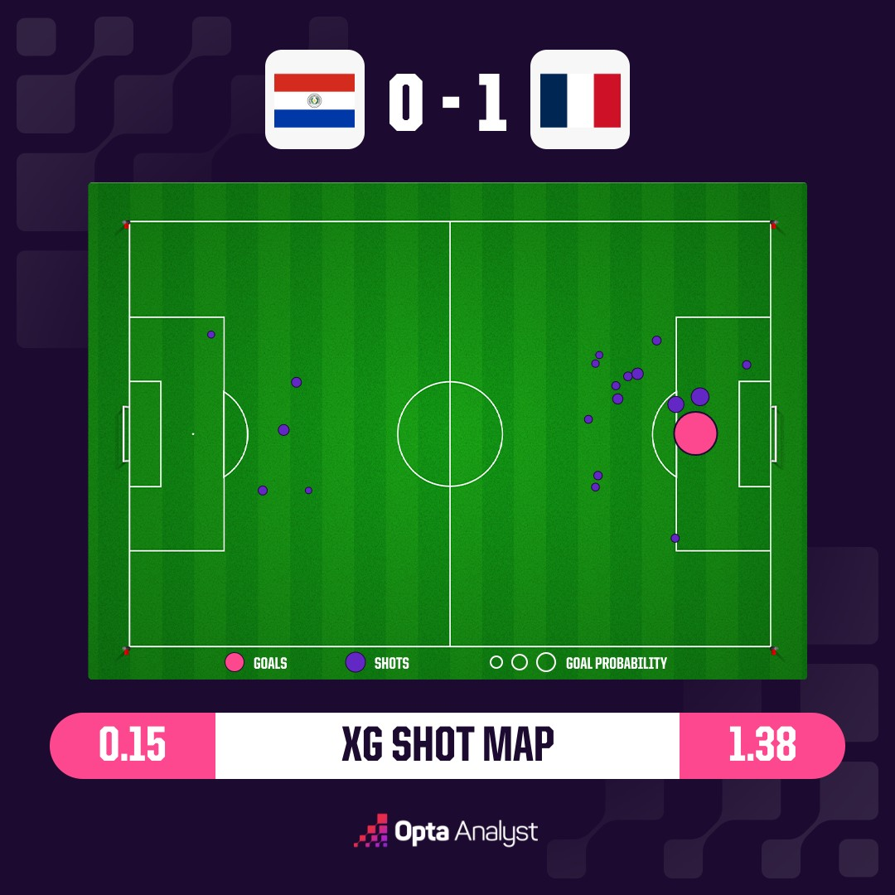
90+11'
That's it! The referee blows the whistle and we have reached full-time. The final score at Philadelphia Stadium is Paraguay 0-1 France.
90+10'
A foul from Désiré Doué on Mauricio sees Paraguay win a free-kick, but it is not in a dangerous position, so France should be confident they can defend it easily enough.
90+9'
Foul! A free-kick now in a dangerous area for France, after Kylian Mbappé is fouled by Juan José Cáceres. Can France make the most of this opportunity?
90+8'
Can France survive here? They will have some defending to do after the ball is turned behind for a corner kick. Will Paraguay take this opportunity and grab the goal they have been pushing for?
90+7'
A yellow card for France's Michael Olise. They will have to walk a tightrope for the rest of this match, and Paraguay will likely look to target them and draw a second bookable offence.
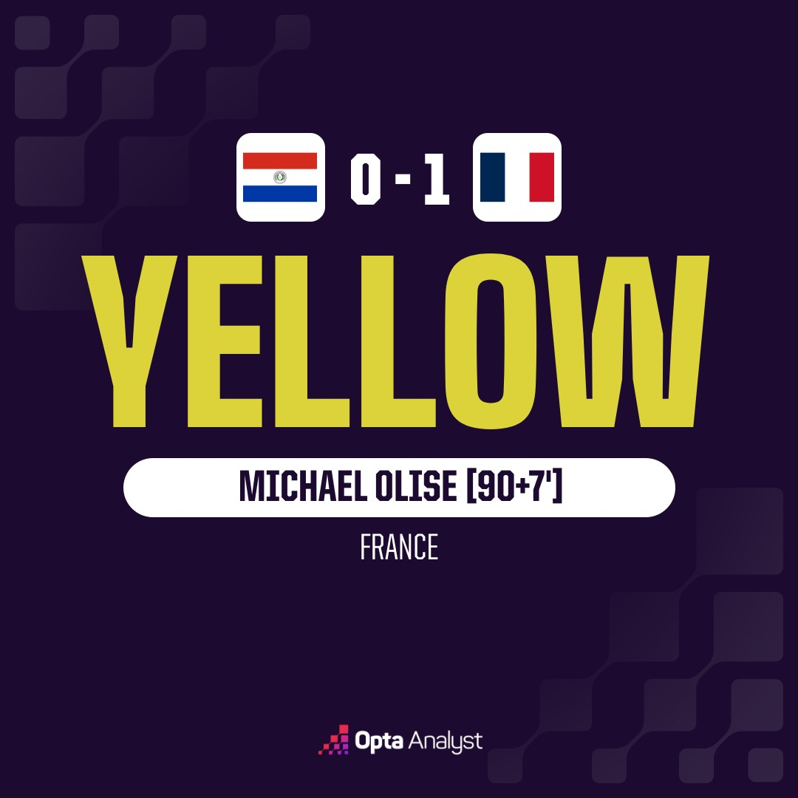
90+7'
A free-kick to Paraguay, as Michael Olise goes in and fouls Matías Galarza. However, France will not mind giving one away in this area too much, with plenty of distance to their goal.
90+6'
Kylian Mbappé has attempted 5 shots, the first time he has attempted at least 5 shots in a match in the FIFA World Cup since facing Sweden on 30th June 2026 (5 shots).
90+6'
What a miss! That is a bad finish from Kylian Mbappé, who has been unable to convert from a good opportunity, seeing a big chance for France to extend their lead go begging. Will Paraguay make them pay for that profligacy?
90+6'
CLOSE! Kylian Mbappé gets into a decent shooting position inside the Paraguay area, and manages to find space to get an effort off. However, Orlando Gill is equal to it.
90+3'
It's all hands on deck for France as they defend their lead, making a wave of critical blocks and clearances
90+2'
Free-kick! A foul from Gustavo Caballero on Dayot Upamecano. It is well away from Paraguay’s goal, so it is unlikely to result in a chance for France.
90+1'
Foul! A free-kick now in a dangerous area for France, after Michael Olise is fouled by Matías Galarza. Can France make the most of this opportunity?
90+1'
BLOCKED! That was close. Désiré Doué got off a shot, which was heading in, but Gustavo Gómez was on hand to make a vital intervention. Great block!
90+1'
A chance goes begging as Mauricio gets off a shot that does not hit the target. They might have done better with that one, but instead it is a goal-kick to France.
89'
Orlando Gill is called into action to keep out a shot from outside the box by Kylian Mbappé. The effort from the France player was on target, but Paraguay shot-stopper got to it.
89'
Plenty of the ball in the last quarter-of-an-hour of this match for France, but still Paraguay stand firm, despite having had only 28.91% of the ball in that period. Can France make their possessional dominance count?
87'
A rash challenge from Matías Galarza, who sends Manu Koné tumbling, giving France a free-kick. It is not in a threatening position, but it gives them a chance to get back on the ball.
87'
It's all hands on deck for France as they defend their lead, making a wave of critical blocks and clearances
87'
No luck! Júnior Alonso takes on a shot that, had they got it right, might have been set to test the goalkeeper, but instead it is sent off target and France come away unscathed.
86'
Pure professionalism from France in these closing stages - keeping the ball for fun with another 20+ pass move. Paraguay can't get near them as the clock ticks down.
85'
In the last 15 minutes, it is France who have dominated the ball, having seen 67.01% of the possession, yet they have not been able to go and turn that into a single shot, so there is no imminent sign of a goal.
84'
Ousmane Dembélé’s match is over as France decide to make a substitution. Rayan Cherki enters the field in what looks like a tactical change.
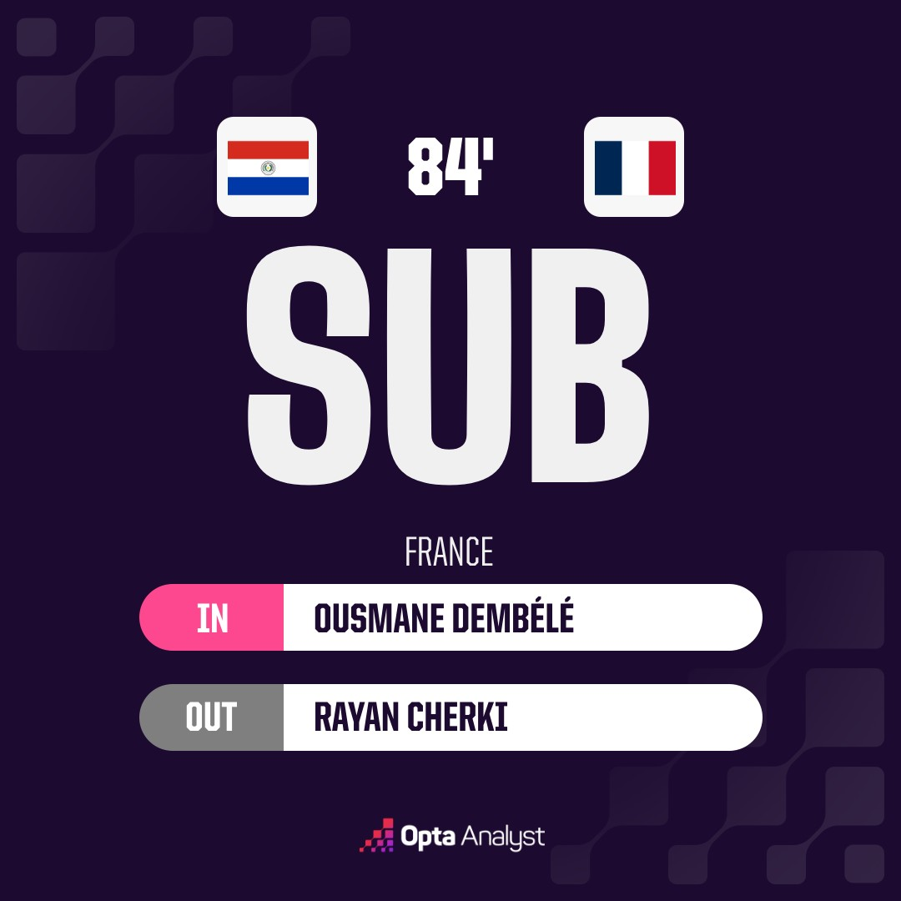
84'
A foul from Gustavo Caballero on Michael Olise sees France win a free-kick, but it is not in a dangerous position, so Paraguay should be confident they can defend it easily enough.
82'
No goalmouth action for some time now, with neither team having had a shot in the past 10 minutes. Will there be a moment that changes things soon? France have seen plenty of the ball, however, with 55 per cent of the possession in their favour during that period.
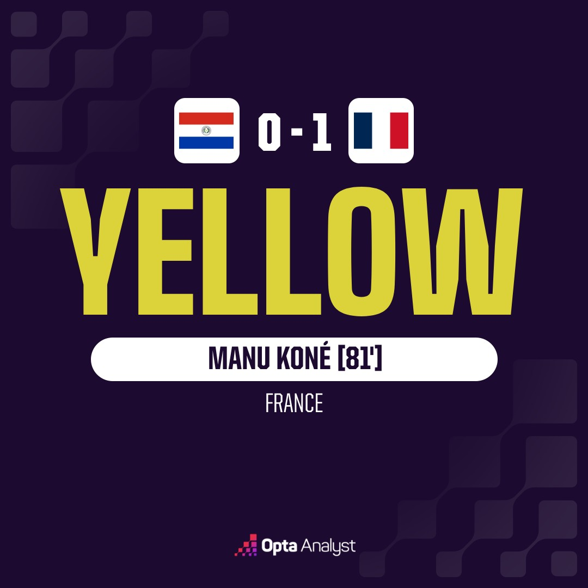
81'
A yellow card for France's Manu Koné. They will have to walk a tightrope for the rest of this match, and Paraguay will likely look to target them and draw a second bookable offence.
81'
A free-kick to Paraguay, as Manu Koné goes in and fouls Juan José Cáceres. However, France will not mind giving one away in this area too much, with plenty of distance to their goal.
81'
Paraguay have not had a shot on target so far in this game.
80'
A free-kick to France, as Gabriel Ávalos goes in and fouls Dayot Upamecano. However, Paraguay will not mind giving one away in this area too much, with plenty of distance to their goal.
80'
It has been 30 minutes since Paraguay last attempted a shot in this game.
77'
A rash challenge from Kylian Mbappé, who sends Juan José Cáceres tumbling, giving Paraguay a free-kick. It is not in a threatening position, but it gives them a chance to get back on the ball.
76'
There are 15 minutes plus added time to go in this match. France have had more of the ball so far with a possession figure of 78.08%, while Paraguay have had 21.92%.
72'
Andrés Cubas goes in on Adrien Rabiot and concedes a foul. The free-kick is not in a particularly dangerous area from Paraguay’s viewpoint, though.
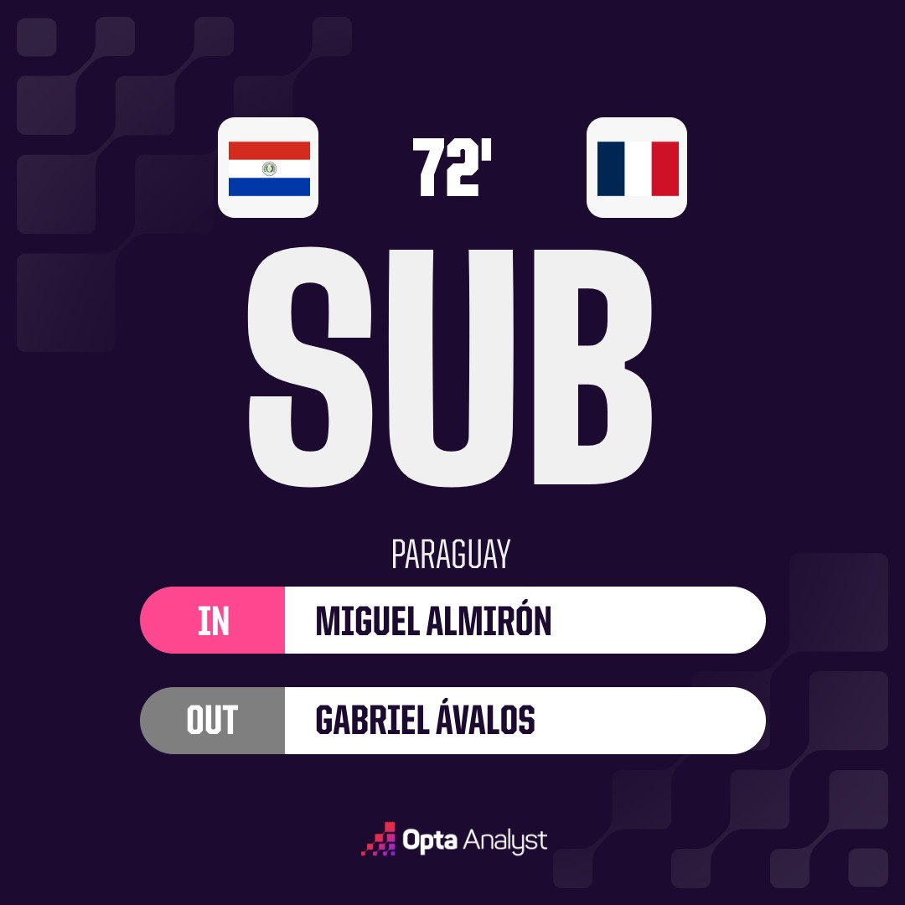
71'
A substitution for Paraguay sees Miguel Almirón replaced by Gabriel Ávalos. There does not appear to be any obvious sign of an injury, so that is a tactical switch.
71'
The Paraguay manager is looking to the substitutes’ bench, bringing on Mauricio in place of Diego Gómez. Will the change make a difference? Let’s find out!
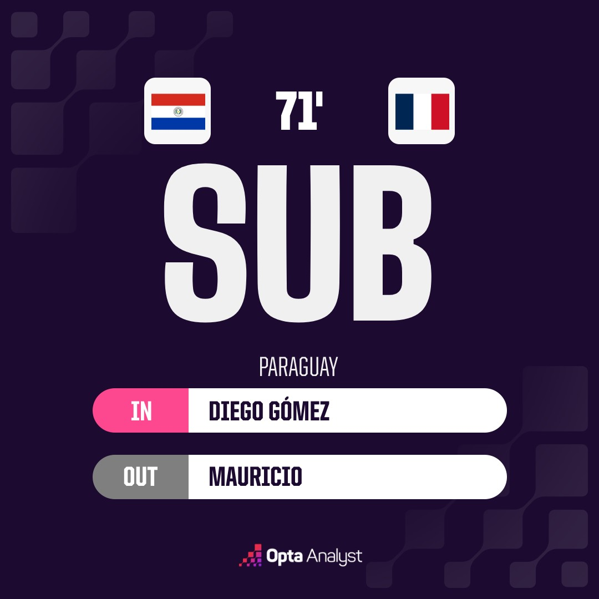
70'
France have had plenty of the ball in the last 15 minutes, with 73.27% possession compared to just 26.73% for their opponents. However, there’s not been any goal to come from that possessional dominance just yet.
70'
France have avoided defeat in their last 30 matches when scoring first in the FIFA World Cup, since a 2-3 loss to Poland on 10th July 1982.
70'
Kylian Mbappé has scored his 19th goal in the FIFA World Cup.
70'
France have won 1 penalty in the 2026 FIFA World Cup, only Argentina (2) and Switzerland (2) have been awarded more.
70'
PENALTY SCORED! Kylian Mbappé makes no mistake from the spot, calmly putting away their effort to put France ahead. Can Paraguay get back into this from here? It’s 1-0.
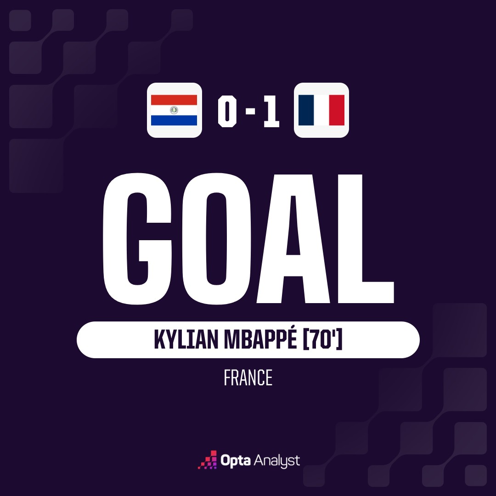
67'
Decision overturned! The referee’s original call is deemed to be wrong by VAR, and after a check, it has been changed. The technology has played a major role there.
67'
This decision may not stand, as it is going to VAR. The referee has stopped the play while his video assistant reviews the incident.
66'
This match is into the last 25 minutes now, and before it goes into the final stages, let’s check on the shots. There have been 13 in total – 3 from Paraguay, and 10 from France. Of those attempts, 1 have hit the target – 0 from Paraguay and 1 from France.
65'
PENALTY TO France! A huge moment in this game, with France given the chance to go ahead after Diego Gómez’s foul. Still plenty of time left in this one, but a goal here would nose France in front.
64'
MISS! A shot from Kylian Mbappé ends up being off target. They might have done a bit better with that one, but it remains France 0-0 Paraguay.
61'
Bradley Barcola’s match is over as France decide to make a substitution. Désiré Doué enters the field in what looks like a tactical change.
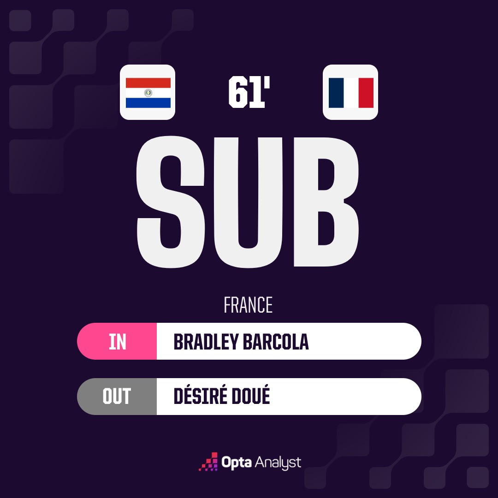
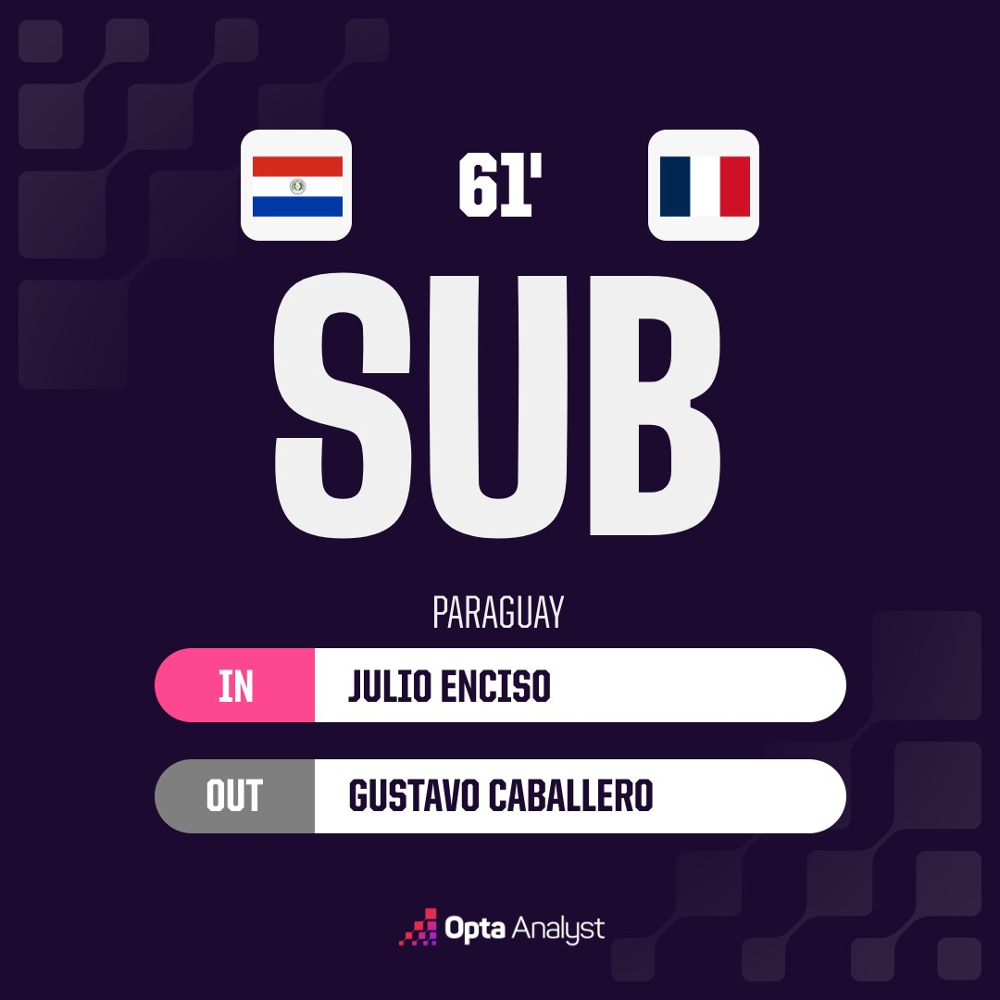
61'
That is bad news for Paraguay, as they suffer an injury blow, with Julio Enciso having had to receive treatment before then making their way off the pitch. Gustavo Caballero is coming on.
60'
That is a disappointing effort from Bradley Barcola, who went for glory but got their attempt wrong, and the shot sailed off target. A frustrating moment for France.
58'
A change for Paraguay, as they are forced into a substitution with Omar Alderete having sustained an injury. José Canale is coming on for Paraguay now.
54'
Paraguay have a corner to defend now after Orlando Gill diverts an attempt from Manu Koné out of play. Can France take this chance to get a good delivery in and really test their opponent’s defence?
54'
Plenty of the ball in the last quarter-of-an-hour of this match for France, but still Paraguay stand firm, despite having had only 19.21% of the ball in that period. Can France make their possessional dominance count?
52'
A chance goes begging as Ousmane Dembélé gets off a shot that does not hit the target. They might have done better with that one, but instead it is a goal-kick to Paraguay.
50'
Paraguay win a corner after Miguel Almirón sees a shot diverted wide by William Saliba. Can Paraguay make this opportunity count, or will France defend this?
49'
France have attempted the last 5 shots in this game, Paraguay last shot was taken by Diego Gómez in the 28th minute.
49'
MISS! A shot from Adrien Rabiot ends up being off target. They might have done a bit better with that one, but it remains France 0-0 Paraguay.
48'
France showing great composure despite going behind early - their passing flow remains intact as they work to get back into this contest.
47'
Gustavo Velázquez goes in on Michael Olise and concedes a foul. The free-kick is not in a particularly dangerous area from Paraguay’s viewpoint, though.
46'
A free-kick to Paraguay, as Lucas Digne goes in and fouls Miguel Almirón. However, France will not mind giving one away in this area too much, with plenty of distance to their goal.
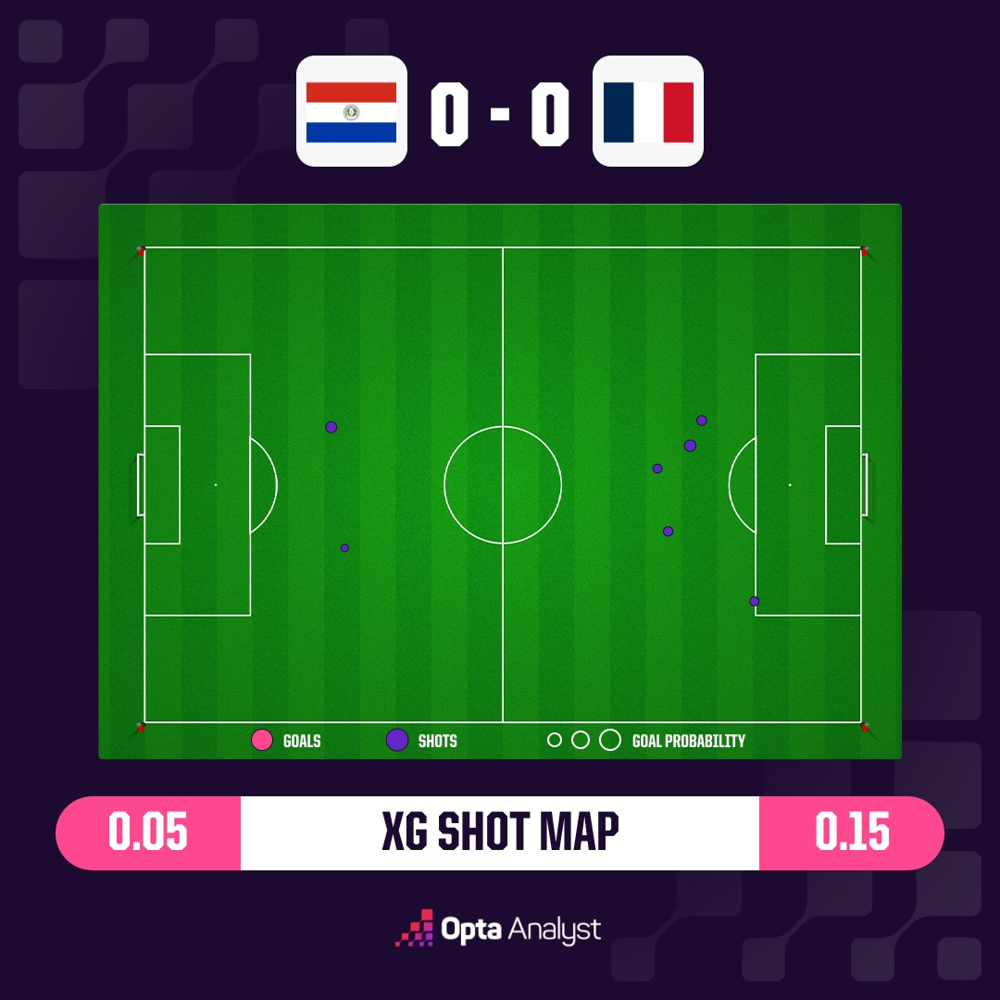
45+4'
Half-time! We reach the interval with the score level at 0-0 between Paraguay and France. Will we see a winner in the second half?
45+1'
BLOCK! An intervention from Gustavo Velázquez might have just prevented a goal, with the defending player getting in the way of an attempt from Adrien Rabiot. Solid defending there!
43'
MISS! A shot from Manu Koné ends up being off target. They might have done a bit better with that one, but it remains France 0-0 Paraguay.
41'
Can Paraguay survive here? They will have some defending to do after the ball is turned behind for a corner kick. Will France take this opportunity and grab the goal they have been pushing for?
41'
Paraguay have not had a shot on target so far in this game.
40'
A foul from Julio Enciso on Jules Koundé sees France win a free-kick, but it is not in a dangerous position, so Paraguay should be confident they can defend it easily enough.
38'
France win a corner after Ousmane Dembélé sees a shot diverted wide by Júnior Alonso. Can France make this opportunity count, or will Paraguay defend this?
37'
France are having plenty of the ball, with 80.00% possession in the last 15 minutes. However, they have been unable to transfer that possessional dominance into a goal during that period.
36'
Dayot Upamecano goes in on Gustavo Gómez and concedes a foul. The free-kick is not in a particularly dangerous area from France’s viewpoint, though.
36'
A chance now for France to get a good delivery into the box, after the ball is diverted behind for a corner. France have been pushing for what would be a key goal, but Paraguay have stood firm so far.
36'
This feels like a spell that could matter - France earning repeated chances to swing it in from wide areas.
34'
This could be a chance for France, after Andrés Cubas fouls Kylian Mbappé, handing them a free-kick in a threatening area. A good set-piece from here could really test the Paraguay defense!
34'
A rash challenge from Gustavo Velázquez, who sends Mike Maignan tumbling, giving France a free-kick. It is not in a threatening position, but it gives them a chance to get back on the ball.
33'
Good play from Julio Enciso, who draws a foul from William Saliba to hand Paraguay a free-kick in a dangerous position. Will they create something from this set-piece?
33'
No luck! Adrien Rabiot takes on a shot that, had they got it right, might have been set to test the goalkeeper, but instead it is sent off target and Paraguay come away unscathed.
30'
A rash challenge from Matías Galarza, who sends Manu Koné tumbling, giving France a free-kick. It is not in a threatening position, but it gives them a chance to get back on the ball.
30'
Bradley Barcola goes in on Miguel Almirón and concedes a foul. The free-kick is not in a particularly dangerous area from France’s viewpoint, though.
28'
That is a disappointing effort from Diego Gómez, who went for glory but got their attempt wrong, and the shot sailed off target. A frustrating moment for Paraguay.
28'
No luck! Júnior Alonso takes on a shot that, had they got it right, might have been set to test the goalkeeper, but instead it is sent off target and France come away unscathed.
23'
Can Paraguay survive here? They will have some defending to do after the ball is turned behind for a corner kick. Will France take this opportunity and grab the goal they have been pushing for?
22'
France win a corner after Manu Koné sees a shot diverted wide by Diego Gómez. Can France make this opportunity count, or will Paraguay defend this?
22'
France are having plenty of the ball, with 73.65% possession in the last 15 minutes. However, they have been unable to transfer that possessional dominance into a goal during that period.
21'
A lull in this match, as the teams prob and probe, but without much success. It has been 10 minutes since there was an attempt from either side, though France are seeing more of the ball, with 66 per cent possession to Paraguay’s 34 per cent during that time.
19'
Yellow card! Bradley Barcola will have to be careful from now on after they are cautioned.
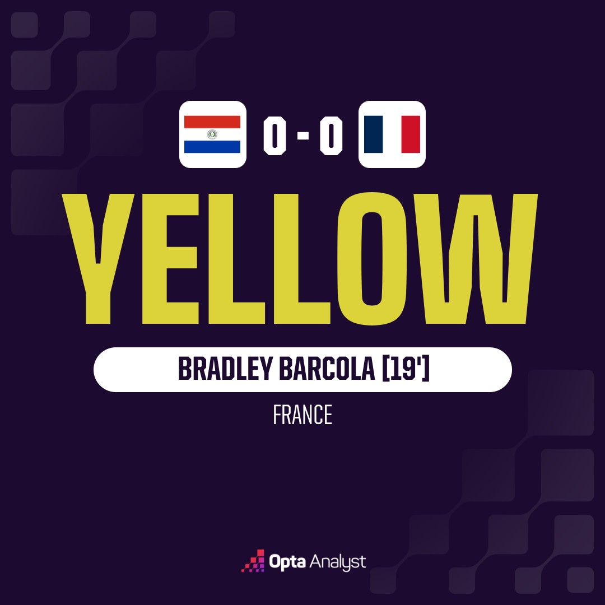
19'
Bradley Barcola goes in on Juan José Cáceres and concedes a foul. The free-kick is not in a particularly dangerous area from France’s viewpoint, though.
16'
France have had plenty of the ball in the last 15 minutes, with 86.17% possession compared to just 13.83% for their opponents. However, there has not been any shot to come from that possessional dominance, which will be a huge frustration for their coach.
14'
A rash challenge from Michael Olise, who sends Matías Galarza tumbling, giving Paraguay a free-kick. It is not in a threatening position, but it gives them a chance to get back on the ball.
12'
A rash challenge from Manu Koné, who sends Matías Galarza tumbling, giving Paraguay a free-kick. It is not in a threatening position, but it gives them a chance to get back on the ball.
11'
Neither team has had a shot in the past 10 minutes, as this match just enters something of a down period. France have seen more of the ball, with 90 per cent possession, but Paraguay are keeping them away from goal. There is still a chance the match will spark into life, though.
3'
It’s been tight so far, and Paraguay are making sure it stays that way with strong defensive discipline and well-timed clearances.
1'
KICK-OFF! And here we go! We are up and running in this clash between France and Paraguay at Philadelphia Stadium. Stay tuned for all the action as it happens!
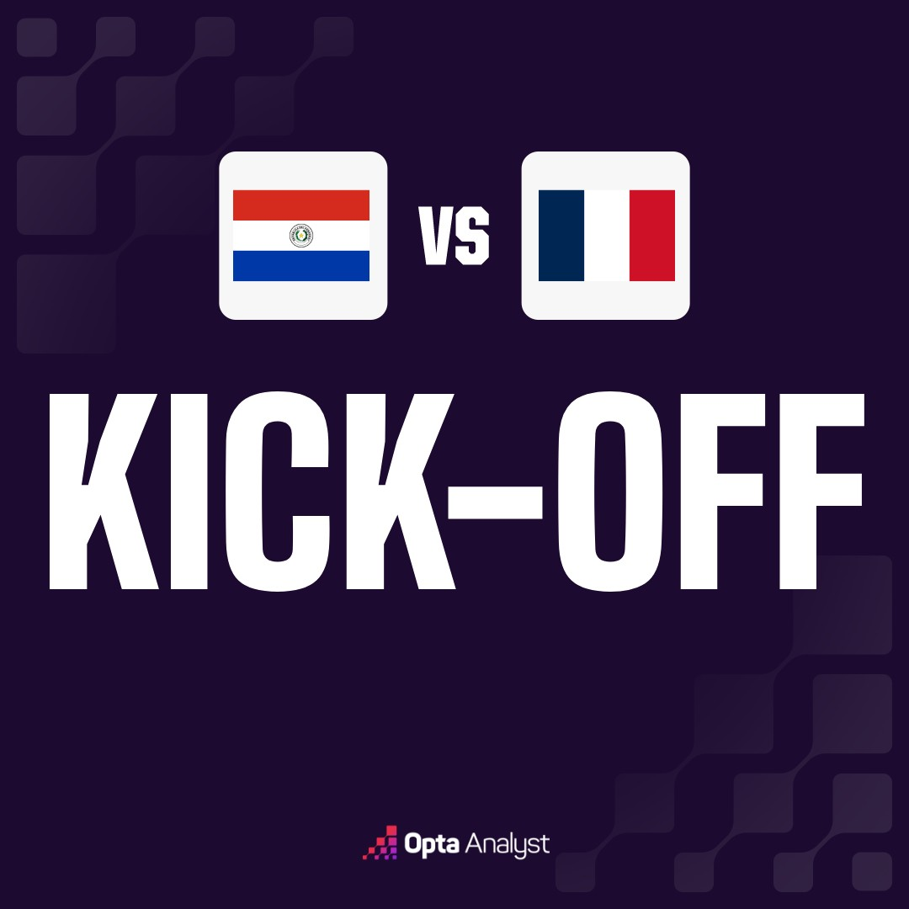
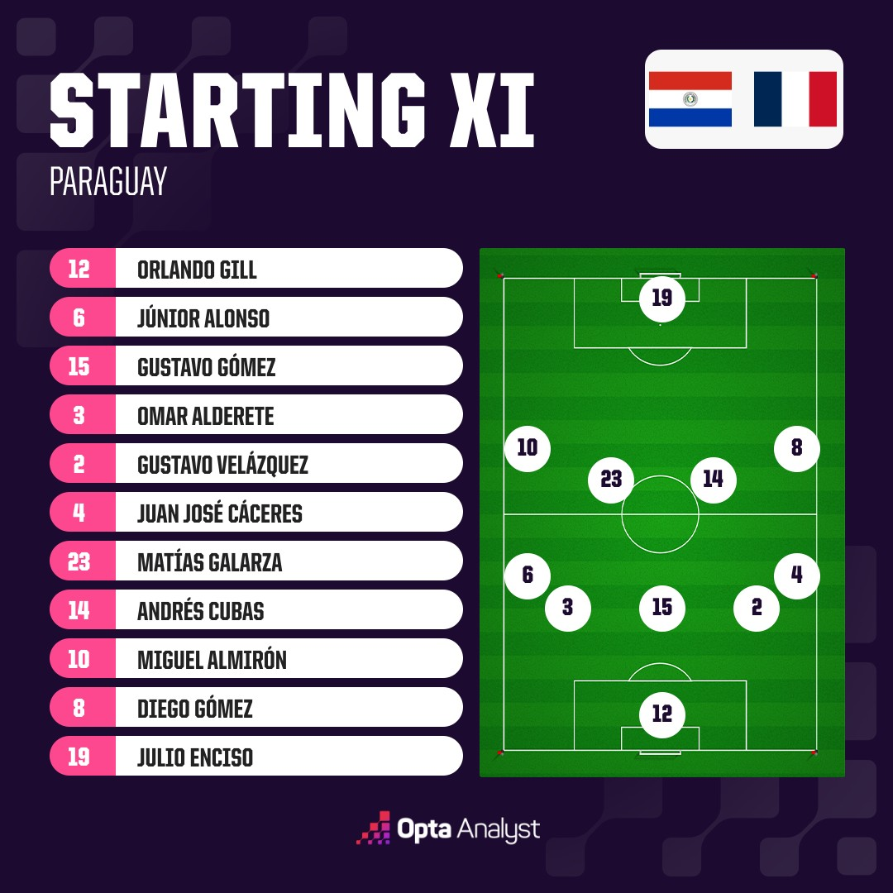
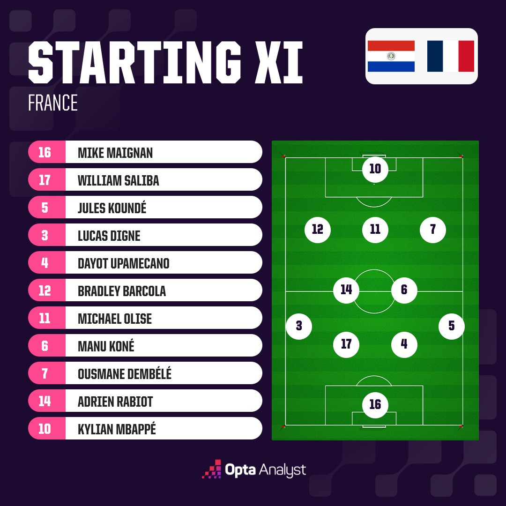
Ousmane Dembélé is making his 16th appearance in the FIFA World Cup.
Kylian Mbappé is making his 19th appearance in the FIFA World Cup.
France have won their last 6 matches in a row
Paraguay have kept a clean sheet in the last 4 home matches
Paraguay have won their last 4 games when M. Galarza has scored
France will be bidding to extend their FIFA World Cup winning streak when they face Paraguay for Saturday's Round of 16 clash at Philadelphia Stadium.
Paraguay won their last World Cup match, beating Germany 1-1 (4-3) on penalties in the round of 32 on June 29. Neither team scored in the additional period, forcing the decisive shootout. Julio Enciso was on the scoresheet in the win. They are unbeaten in their last three games in all competitions. In seven games this year, they have four wins, one draw, and two losses.
France won their World Cup round of 32 game 3-0 against Sweden on June 30. Kylian Mbappé netted two to lead the scoring. They have won five in a row. In 2026, they have won seven and lost one.
When the two sides last met in action, France came out on top 5-0 in a friendly at Roazhon Park in June 2017. Olivier Giroud led the French side with three goals, netting in the sixth, 13th, and 69th minute. Moussa Sissoko and Antoine Griezmann also were on the scoresheet.
The trio of Matías Galarza, Enciso, and Mauricio have provided stand-out moments for Paraguay in World Cup play. The three players are the team's joint top scorers with one goal. Mbappé has been the most prolific player for France, scoring on six occasions in this season's World Cup, including three match-opening goals. He is tied as the competition's top scorer.
France have scored in each of their four World Cup contests this season.
In their last six matches in all competitions, Paraguay have won two, drawn two and lost two. The Paraguayan side scored eight and conceded seven over that period, scoring first in three of the six contests. They had four first-half goals, while their opponents netted three times in the first 45 minutes. The French side have won five and lost one in their last six. The French side scored 17 and conceded five in that stretch, netting first in all six. They had seven goals in the first half, while their opponents netted only one before the break.
-
General
Possession 24.1% 24.14275.85875.9% Possession lost in defensive half 54 541717 Possession lost in middle third 50 503838 Duels 107 107109109 Duels success rate 46.7% 46.72950.45950.5% Aerial duels 23 232323 Aerial duels won 26.1% 26.08773.91373.9% Successful dribbles 4 41515 Fouls won 11 111313 Offsides 0 000 Corner awarded 2 21212 -
Distribution
Passes 183 183569569 Long passes 55 553939 Long passes proportion (%) 30.1% 30.0556.8546.9% Passing accuracy 53.6% 53.55289.63189.6% Passes in opponents' half 107 107414414 Passing accuracy in opponents' half (%) 41.1% 41.12188.64788.6% Total passes in the final third 50 50233233 Passing accuracy in final third (%) 26.0% 2684.97985.0% Forward passes 143 143364364 Forward passes (%) 78.1% 78.14263.97264.0% Through balls 1 133 Final third entries 42 428787 Penalty area entries 19 193333 Total open play crosses 3 31313 Crosses 5 52222 Crossing accuracy 0.0% 04.5454.5% -
Attack
Goals 0 011 Shots 5 51515 Shots on target 0 055 Blocked shots 1 144 Headed shots 0 000 Shots outside the box 4 41010 Shots inside the box 1 155 Shots accuracy excluding blocked shots 0.0% 045.45545.5% Shooting accuracy 0.0% 033.33333.3% Key Passes 3 31313 -
Defence
Tackles 29 291313 Tackles success rate 72.4% 72.41453.84653.8% Clearances 21 212727 Interceptions 14 141010 Recoveries 39 394949 Attacking third recovery 1 144 Defensive third recovery 33 332323 Midfield third recovery 5 52222 Recoveries in attacking half (%) 2.6% 2.5648.1638.2% -
Discipline
Fouls conceded 13 131111 Yellow cards 0 033 Red cards 0 000